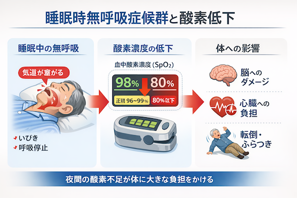
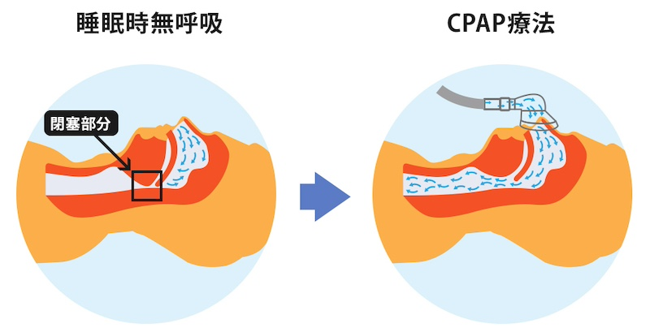

公開日：2026年6月｜最終更新：2026年6月
「呼吸」は、私たちが意識せずに行っている大切な働きです。
しかし高齢になると、この「当たり前の呼吸」に変化が起きてきます。
特に注意したいのが、「睡眠中の呼吸」です。自分では気づかないうちに、 呼吸が止まってしまうことがあります。
その代表的なものが「睡眠時無呼吸症候群」です。 「いびきがある」「日中に眠い」こうした症状は、体からのサインかもしれません。
睡眠時無呼吸症候群とは、寝ている間に呼吸が何度も止まる病気です。
1回あたり10秒以上の無呼吸が繰り返され、そのたびに「体は酸素不足の状態」になります。
「いびきがあるから大丈夫」ではなく、いびきは危険のサインであることもあります。
ここで重要になるのが血中酸素濃度（SpO₂）です。
体の中にどれだけ酸素があるかを示す数値で、通常は「96〜99％程度」が目安です。
しかし、無呼吸があると睡眠中に酸素が低下します。
この「夜間の酸素低下」が体に大きな負担をかけます。

最近では、「Apple Watch」などの機器で睡眠中の酸素の変化を確認できるようになっています。
これらを「見える化」できることが大きな特徴です。
さらに高齢者では、 日中の眠気・ふらつき・転倒・骨折といったリスクにもつながります。
睡眠時無呼吸症候群は「肥満の人に多い」というイメージがありますが、 高齢者ではそれだけではありません。
これらにより、やせていても起こることがあります。 体型に関係なく注意が必要です。
症状がある場合は医療機関で検査を行い、必要に応じて治療が行われます。
代表的な治療が「CPAP（シーパップ）療法」です。
適切に使用することで、眠気の改善・血圧の安定・生活の質の向上が期待できます。

このような症状がある場合は注意が必要です。
呼吸は「見えないもの」ですが、現在は機器によって状態を知ることができます。
呼吸は“見えない”ものから、“測れる”ものへ。
小さな気づきが、大きな健康維持につながります。
※本ページは公的機関および学会の情報をもとに作成しています。